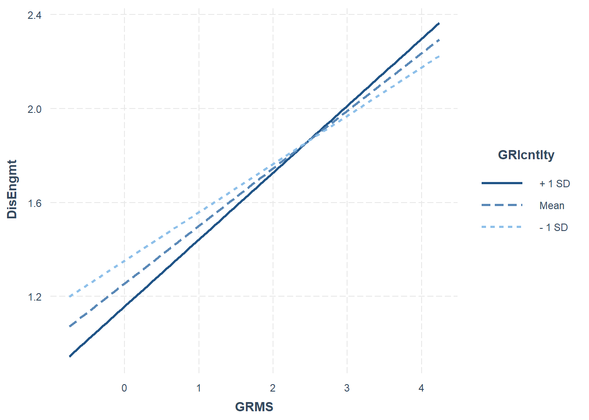
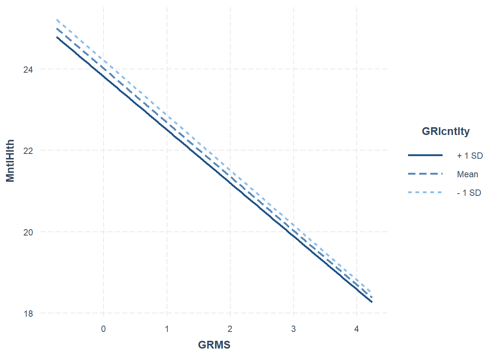
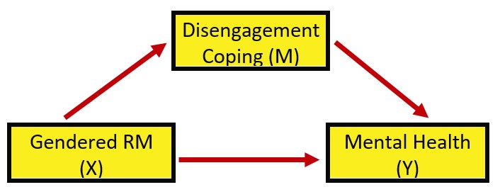
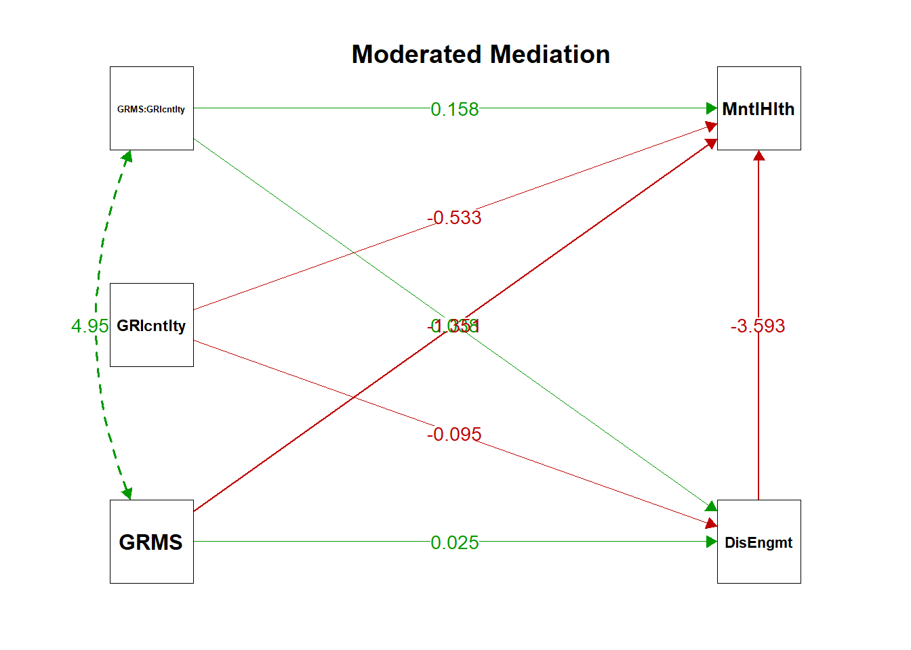

Chapter 8 Moderated Mediation
The focus of this lecture is the moderated mediation. That is, are the effects of the indirect effect (sign, significance, strength, presence/absence) conditional on the effects of the moderator.
At the outset, please note that although I rely heavily on Hayes (2018) text and materials, I am using the R package lavaan in these chapters. Very recently, Hayes has introduced a PROCESS macro for R. Because I am not yet up-to-speed on using this macro (it is not a typical R package) and because we will use lavaan for confirmatory factor analysis and structural equation modeling, I have chosen to utilize the lavaan package. A substantial difference is that the PROCESS macros use ordinary least squares and lavaan uses maximum likelihood estimators.
8.2 Conditional Process Analysis
8.2.1 The definitional and conceptual
Hayes (2018) coined the term and suggests we also talk about “conditional process modeling.”
Conditional process analysis: used when the analytical goal is to describe and understand the conditional nature of the mechanism or mechanisms by which a variable transmits its effect on another.
We are integrating moderation and mediation mechanisms together into a single integrated analytical model.
- Mediator: Any causal system in which at least one causal antecedent X variable is proposed as influencing an outcome Y through a intervening variable M. In this model, there are two pathways by which X can influence Y: direct effect of X on Y, and indirect effect of X on Y through M.
- Answers question, “How does X affect Y”
- Partitions the X-to-Y relationship into two paths of influence: direct, indirect.
- Indirect effect contains two components (a,b) that when multipled (a*b) yield an estimate of how much these two cases that differ by one unit on X are estimated to differ on Y through the effect of X on M, which in turn affects Y.
- Keywords: how, through, via, indirect effect
- Moderator: The effect of X on some variable Y is moderated by W if its size, sign, or strength depends on or can be predicted by W.
- Stated another way, W and X interact in their influence on Y.
- Moderators help establish the boundary conditions of an effect or the circumstances, stimuli, or type of people for which the effect is large v. small, present v. absent, positive v. negative, and so forth.
- Keywords: “it depends,” interaction effect.
- Stated another way, W and X interact in their influence on Y.
Why should we engage both mediators and moderators? Hayes (2018) suggest that if we have only a mediator(s) in the model that we lose information if we “reduce complex responses that no doubt differ from person to person or situation to situation” (p. 394). He adds that “all effects are moderated by something” (p. 394). Correspondingly, he recommends we add them to a mediation anlaysis.
Hayes (2018) suggests that “more complete” (p. 395) analyses model the mechanisms at work linking X to Y (mediator[s]) while simultaneously allowing those effects to be contingent on context, circumstance, or individual difference (moderator[s]).
What are conditional direct and indirect effects?. Mediation analyses produce indirect (the product of a sequence of effects that are assumed to be causal) and direct (the unique contribution of X to Y, controlling for other variables in the model) effects. These effects (the X-to-Y/direct and X-to-M-to-Y/indirect), can also be moderated. This is our quest! Figure 11.2 in Hayes’ text (2018) illustrates conceptually and statistically that we can specify moderation of any combination of direct and indirect paths/effects.

Within the CPA framework we have lots of options that generally fall into two categories:
- Moderated mediation: when an indirect effect of X on Y through M is moderated; the mechanism represented by the X-to-M-to-Y chain of events operates to varying degrees (or not at all) for certain people or in certain contexts.
- Any model in which the indirect effect (a*b) changes as a function of one or more moderators. These moderators can be operating on the a, b, or c’ paths or any possible combination of the three
- X could moderate its own indirect effect on Y through M if the effect of M on Y depends on X, or
- The indirect effect of X on Y through M could be contingent on a fourth variable if that fourth variable W moderates one or more of the relationships in a three-variable causal system, or
- An indirect effect could be contingent on a moderator variable
- Mediated moderation: an interaction between X and some moderator W on Y is carried through a mediator M;
- mediated moderation analysis is simply a mediation analysis with the product of two variables serving as the causal agent of focus
- An interaction between a moderator W and causal agent X on outcome Y could operate through a mediator M
Hayes argues that the mediated moderation hypotheses are “regularly articulated and tested by scientists” (2018, p. 459). He warns, though, that we should not confuse the “abundance of published examples of mediated moderation anlayses…with the meaningfulness of the procedure itself” (p. 460). He later adds that mediation moderation is “neither interesting nor meaningful.” Why?
- Conceptualizing a process in terms of a mediated moderation misdirects attention toward a variable in the model that actually doesn’t measure anything.
- Most often there are moderated mediation models that are identical in equations and resulting coefficients - the difference is in the resulting attentional focus and interpretation.
- Hayes (2018) recommends that models proposing mediated moderation be recast in terms of moderated mediation process.
- Consequently, we will not work a mediated moderation, but there is an example in chapter 12.
8.2.2 Hayes’ (2018) Piecewise Approach to Building Models
In summarizing a strategic approach for testing structural equation models, Joreskog (Joreskog, 1993) identified three scenarios:
- strictly confirmatory: the traditional NHST approach of proposing a single, theoretically derived, model, and after analyzing the data either rejects or fails to reject the model. No further modifications are made/allowed.
- alternative models: the reseacher proposes competing (also theoretically derived) models. Following analysis of a single set of empirical data, he or she selects one model as appropriate in representing the sample data.
- model generating: A priori, the researcher acknowledges that they may/may not find what they have theoretically proposed. So, a priori, they acknowledge that in the absence of ideal fit (which is the usual circumstance), they will proceed in an exploratory fashion to respecify/re-estimate the model. The goal is to find a model that is both substantively meaningful and statistically well-fitting.
A legacy of our field is the strictly confirmatory approach. I am thrilled when I see research experts (e.g., (Byrne, 2016)) openly endorse a model building approach. In Chapter 12, Hayes (2018) demonstrates the piecewise approach to building (and understanding) a complex model.
8.3 Workflow for Moderated Mediation
At this point in this OER’s development, I don’t have a workflow graphic developed for this statistic. However, Hayes’ (2018) piecewise approach to model testing/building is really the workflow. The secret is to decompose the model into its simplest moderations and mediations and analyze them separately before assembling them. When we get to the model we will analyze with this research vignette, a series of diagrams will make this more clear.
Additionally, at the end of the chapter, I offer a template of R script for the popular moderated mediation (a single moderator influencin both the a and c’ paths).
8.4 Research Vignette
Once again the research vignette comes from the Lewis, Williams, Peppers, and Gadson’s (2017) study titled, “Applying Intersectionality to Explore the Relations Between Gendered Racism and Health Among Black Women.” The study was published in the Journal of Counseling Psychology. Participants were 231 Black women who completed an online survey.
Variables used in the study included:
GRMS: Gendered Racial Microaggressions Scale (J. A. Lewis & Neville, 2015) is a 26-item scale that assesses the frequency of nonverbal, verbal, and behavioral negative racial and gender slights experienced by Black women. Scaling is along six points ranging from 0 (never) to 5 (once a week or more). Higher scores indicate a greater frequency of gendered racial microaggressions. An example item is, “Someone has made a sexually inappropriate comment about my butt, hips, or thighs.”
MntlHlth and PhysHlth: Short Form Health Survey - Version 2 (Ware et al., 1995) is a 12-item scale used to report self-reported mental (six items) and physical health (six items). Higher scores indicate higher mental health (e.g., little or no psychological ldistress) and physical health (e.g., little or no reported symptoms in physical functioning). An example of an item assessing mental health was, “How much of the time during the last 4 weeks have you felt calm and peaceful?”; an example of a physical health item was, “During the past 4 weeks, how much did pain interfere with your normal work?”
Sprtlty, SocSup, Engmgt, and DisEngmt are four subscales from the Brief Coping with Problems Experienced Inventory (Carver, 1997). The 28 items on this scale are presented on a 4-point scale ranging from 1 (I usually do not do this at all) to 4(I usually do this a lot). Higher scores indicate a respondents’ tendency to engage in a particular strategy. Instructions were modified to ask how the female participants responded to recent experiences of racism and sexism as Black women. The four subscales included spirituality (religion, acceptance, planning), interconnectedness/social support (vent emotions, emotional support,instrumental social support), problem-oriented/engagement coping (active coping, humor, positive reinterpretation/positive reframing), and disengagement coping (behavioral disengagement, substance abuse, denial, self-blame, self-distraction).
GRIcntlty: The Multidimensional Inventory of Black Identity Centrality subscale (Sellers et al., n.d.) was modified to measure the intersection of racial and gender identity centrality. The scale included 10 items scaled from 1 (strongly disagree) to 7 (strongly agree). An example item was, “Being a Black woman is important to my self-image.” Higher scores indicated higher levels of gendered racial identity centrality.
8.4.1 Simulating the data from the journal article
First, we simulate the data from the means, standard deviations, and correlation matrix from the journal article.
# Entering the intercorrelations, means, and standard deviations from
# the journal article
LEWmu <- c(1.99, 2.82, 2.48, 2.32, 1.75, 5.71, 21.37, 21.07)
LEWsd <- c(0.9, 0.7, 0.81, 0.61, 0.53, 1.03, 3.83, 4.66)
LEWr_mat <- matrix(c(1, 0.2, 0.28, 0.3, 0.41, 0.19, -0.32, -0.18, 0.2,
1, 0.49, 0.57, 0.22, 0.13, -0.06, -0.13, 0.28, 0.49, 1, 0.46, 0.26,
0.38, -0.18, -0.08, 0.3, 0.57, 0.46, 1, 0.37, 0.08, -0.14, -0.06, 0.41,
0.22, 0.26, 0.37, 1, 0.05, -0.54, -0.28, 0.19, 0.13, 0.38, 0.08, 0.05,
1, -0.1, 0.14, -0.32, -0.06, -0.18, -0.14, -0.54, -0.1, 1, 0.47, -0.18,
-0.13, -0.08, -0.06, -0.28, 0.14, 0.47, 1), ncol = 8)
# Creating a covariance matrix
LEWcov_mat <- LEWsd %*% t(LEWsd) * LEWr_mat
LEWcov_mat## [,1] [,2] [,3] [,4] [,5] [,6] [,7]
## [1,] 0.81000 0.12600 0.204120 0.164700 0.195570 0.176130 -1.103040
## [2,] 0.12600 0.49000 0.277830 0.243390 0.081620 0.093730 -0.160860
## [3,] 0.20412 0.27783 0.656100 0.227286 0.111618 0.317034 -0.558414
## [4,] 0.16470 0.24339 0.227286 0.372100 0.119621 0.050264 -0.327082
## [5,] 0.19557 0.08162 0.111618 0.119621 0.280900 0.027295 -1.096146
## [6,] 0.17613 0.09373 0.317034 0.050264 0.027295 1.060900 -0.394490
## [7,] -1.10304 -0.16086 -0.558414 -0.327082 -1.096146 -0.394490 14.668900
## [8,] -0.75492 -0.42406 -0.301968 -0.170556 -0.691544 0.671972 8.388466
## [,8]
## [1,] -0.754920
## [2,] -0.424060
## [3,] -0.301968
## [4,] -0.170556
## [5,] -0.691544
## [6,] 0.671972
## [7,] 8.388466
## [8,] 21.715600# Set random seed so that the following matrix always gets the same
# results.
set.seed(210403)
library(MASS)##
## Attaching package: 'MASS'## The following object is masked from 'package:dplyr':
##
## select## [1] 1.99 2.82 2.48 2.32 1.75 5.71 21.37 21.07## [,1] [,2] [,3] [,4] [,5] [,6] [,7] [,8]
## [1,] 1.00 0.20 0.28 0.30 0.41 0.19 -0.32 -0.18
## [2,] 0.20 1.00 0.49 0.57 0.22 0.13 -0.06 -0.13
## [3,] 0.28 0.49 1.00 0.46 0.26 0.38 -0.18 -0.08
## [4,] 0.30 0.57 0.46 1.00 0.37 0.08 -0.14 -0.06
## [5,] 0.41 0.22 0.26 0.37 1.00 0.05 -0.54 -0.28
## [6,] 0.19 0.13 0.38 0.08 0.05 1.00 -0.10 0.14
## [7,] -0.32 -0.06 -0.18 -0.14 -0.54 -0.10 1.00 0.47
## [8,] -0.18 -0.13 -0.08 -0.06 -0.28 0.14 0.47 1.00Rename the variables
as.data.frame(Lewis_df, row.names = NULL, optional = FALSE, make.names = TRUE)
library(tidyverse)
Lewis_df <- Lewis_df %>%
as.data.frame %>%
rename(GRMS = V1, Sprtlty = V2, SocSup = V3, Engmgt = V4, DisEngmt = V5,
GRIcntlty = V6, MntlHlth = V7, PhysHlth = V8)## GRMS Sprtlty SocSup Engmgt DisEngmt GRIcntlty MntlHlth PhysHlth
## 1 0.7792361 2.628957 1.758948 1.691459 1.062341 5.533258 22.70042 19.42231
## 2 1.5729406 1.943789 1.101567 2.446707 1.885076 5.806530 22.67086 22.25516
## 3 1.9586843 3.039406 1.591625 2.428866 1.635518 5.166721 19.06958 23.23199
## 4 0.6532324 2.624590 1.039778 1.495290 1.506393 4.276244 23.90836 18.74549
## 5 2.8280150 3.242341 2.202956 1.553723 1.024422 5.730293 22.86224 18.80227
## 6 1.2809196 3.052410 4.097964 2.727955 1.565009 8.474002 19.13631 24.481538.4.2 Quick peek at the data
## vars n mean sd median trimmed mad min max range skew
## GRMS 1 212 1.99 0.90 2.01 2.00 0.93 -0.75 4.24 4.99 -0.12
## Sprtlty 2 212 2.82 0.70 2.75 2.82 0.65 0.46 4.68 4.23 -0.06
## SocSup 3 212 2.48 0.81 2.47 2.46 0.77 -0.32 4.68 5.00 0.11
## Engmgt 4 212 2.32 0.61 2.33 2.32 0.57 0.37 4.08 3.71 -0.02
## DisEngmt 5 212 1.75 0.53 1.75 1.75 0.55 0.58 3.00 2.42 -0.04
## GRIcntlty 6 212 5.71 1.03 5.67 5.68 1.00 3.08 9.40 6.32 0.32
## MntlHlth 7 212 21.37 3.83 21.60 21.46 4.29 11.65 31.90 20.25 -0.15
## PhysHlth 8 212 21.07 4.66 20.79 21.03 4.68 8.43 33.71 25.28 0.07
## kurtosis se
## GRMS -0.14 0.06
## Sprtlty 0.34 0.05
## SocSup 0.41 0.06
## Engmgt 0.22 0.04
## DisEngmt -0.64 0.04
## GRIcntlty 0.36 0.07
## MntlHlth -0.54 0.26
## PhysHlth -0.18 0.32And a quick peek at a correlation matrix.
## Registered S3 methods overwritten by 'broom':
## method from
## tidy.glht jtools
## tidy.summary.glht jtools## The ability to suppress reporting of reporting confidence intervals has been deprecated in this version.
## The function argument show.conf.interval will be removed in a later version.##
##
## Means, standard deviations, and correlations with confidence intervals
##
##
## Variable M SD 1 2 3 4
## 1. GRMS 1.99 0.90
##
## 2. Sprtlty 2.82 0.70 .20**
## [.07, .33]
##
## 3. SocSup 2.48 0.81 .28** .49**
## [.15, .40] [.38, .59]
##
## 4. Engmgt 2.32 0.61 .30** .57** .46**
## [.17, .42] [.47, .65] [.35, .56]
##
## 5. DisEngmt 1.75 0.53 .41** .22** .26** .37**
## [.29, .52] [.09, .34] [.13, .38] [.25, .48]
##
## 6. GRIcntlty 5.71 1.03 .19** .13 .38** .08
## [.06, .32] [-.00, .26] [.26, .49] [-.06, .21]
##
## 7. MntlHlth 21.37 3.83 -.32** -.06 -.18** -.14*
## [-.44, -.19] [-.19, .08] [-.31, -.05] [-.27, -.01]
##
## 8. PhysHlth 21.07 4.66 -.18** -.13 -.08 -.06
## [-.31, -.05] [-.26, .00] [-.21, .06] [-.19, .08]
##
## 5 6 7
##
##
##
##
##
##
##
##
##
##
##
##
##
##
## .05
## [-.09, .18]
##
## -.54** -.10
## [-.63, -.44] [-.23, .04]
##
## -.28** .14* .47**
## [-.40, -.15] [.01, .27] [.36, .57]
##
##
## Note. M and SD are used to represent mean and standard deviation, respectively.
## Values in square brackets indicate the 95% confidence interval.
## The confidence interval is a plausible range of population correlations
## that could have caused the sample correlation (Cumming, 2014).
## * indicates p < .05. ** indicates p < .01.
## 8.5 Working the Moderated Mediation
The model we are testing is predicting a mental health (MntlHlth, Y) from gendered racial microaggressions (GRMS,X), mediated by disengagement coping (DisEngmt, M). The relationship between gendered racial microaggressions and disengagement coping (i.e., the a path) is expected to be moderated by gendered racial identity centrality (GRIcntlty, W). Gendered racial identity centrality is also expected to moderate the path between gendered racial microaggressions and mental health (i.e., the c’ path). Thus, the specified model involves the evaluation of a conditional indirect effect.

Hayes’ (2018) textbook and training materials frequently display the conceptual (above) and statistical models (below). These help facilitate understanding.

Looking at the diagram, with two consequent variables (i.e., those with arrows pointing to them) we can see two equations are needed to explain the model:
\[M = i_{M}+a_{1}X + a_{2}W + a_{3}XW + e_{M}\]
\[Y = i_{Y}+c_{1}^{'}X+ c_{2}^{'}W+c_{3}^{'}XW+ bM+e_{Y}\]
When we have complicated models such as these, Hayes (2018) suggests a piecewise approach to model building. Specifically, he decompose the model into its aggregate parts: a simple mediation and two simple moderation.

Let’s start with the the simple moderations.
8.5.1 Piecewise Assembly of the Moderated Mediation
8.5.1.1 Analysis #1: A simple moderation
We are asking, “Does GRI centrality moderate the relationship between gendered racial microaggressiona and disengagement coping?
Y = disengagement coping X = gendered racial microaggressions W = GRI centrality

The formula we are estimating: \[Y=b_{0}+b_{1}X+b_{2}W+b_{3}XW+e_{Y}\]
Let’s specify this simple moderation model with base R’s lm() function. Let’s use the jtools package so we get that great summ function and interactions for the awesome plot.
Since we are just working to understand our moderations, we can run them with “regular old” ordinary least squares.
library(jtools) #the summ function creates a terrific regression table
library(interactions)
library(ggplot2)
Mod_a_path <- lm(DisEngmt ~ GRMS * GRIcntlty, data = Lewis_df)
summ(Mod_a_path, digits = 3)| Observations | 212 |
| Dependent variable | DisEngmt |
| Type | OLS linear regression |
| F(3,208) | 14.685 |
| R² | 0.175 |
| Adj. R² | 0.163 |
| Est. | S.E. | t val. | p | |
|---|---|---|---|---|
| (Intercept) | 1.796 | 0.415 | 4.325 | 0.000 |
| GRMS | 0.025 | 0.184 | 0.138 | 0.890 |
| GRIcntlty | -0.095 | 0.073 | -1.290 | 0.199 |
| GRMS:GRIcntlty | 0.038 | 0.032 | 1.217 | 0.225 |
| Standard errors: OLS |
Looking at these results we can see that the predictors account for about 17% of variance in disengagement coping. However, there is no significance in the predictors. Neither the IV variable (GRMS, [X]), nor the moderator (GRIcntlty, [Y])), nor its interaction (GRMS:GRIcntlty, [XW]) are significant.
It’s always helpful to graph the relationship. The interaction_plot() function from the package, interactions can make helpful illustrations. In the case of interactions/moderations, I like to run them “both ways” to see which makes more sense.

 The figure with GRIcntrlty as the moderator, shows a very similar prediction of disengagement coping from gendered racial microaggressions. The figure that uses GRMS as the moderator, visually, looks like there are big differences as a function of GRMS. Looking at the Y axis (disengagement), though, shows that the scaling variables are not well-spaced.
The figure with GRIcntrlty as the moderator, shows a very similar prediction of disengagement coping from gendered racial microaggressions. The figure that uses GRMS as the moderator, visually, looks like there are big differences as a function of GRMS. Looking at the Y axis (disengagement), though, shows that the scaling variables are not well-spaced.
Next, let’s probe the interaction with simple slopes. Probing the interaction is a common follow-up. With these additional inferential tests we can see where in the distribution of the moderator, X has an effect on Y that is different from zero (and where it does not). There are two common approaches.
The Johnson-Neyman is a floodlight approach and provides an indication of the places in the distribution of W (moderator) that X has an effect on Y that is different than zero. The pick-a-point is sometimes called the analysis of simple slopes or a spotlight approach, probes the distribution at specific values (often the M +/- 1SD).
## JOHNSON-NEYMAN INTERVAL
##
## When GRIcntlty is INSIDE the interval [3.45, 15.76], the slope of GRMS is p
## < .05.
##
## Note: The range of observed values of GRIcntlty is [3.08, 9.40]
##
## SIMPLE SLOPES ANALYSIS
##
## Slope of GRMS when GRIcntlty = 4.68 (- 1 SD):
##
## Est. S.E. t val. p
## ------ ------ -------- ------
## 0.21 0.05 4.15 0.00
##
## Slope of GRMS when GRIcntlty = 5.71 (Mean):
##
## Est. S.E. t val. p
## ------ ------ -------- ------
## 0.25 0.04 6.49 0.00
##
## Slope of GRMS when GRIcntlty = 6.74 (+ 1 SD):
##
## Est. S.E. t val. p
## ------ ------ -------- ------
## 0.28 0.05 5.68 0.00# sim_slopes(Mod_a_path, pred=GRIcntlty, modx = GRMS) #sometimes I
# like to look at it in reverse -- like in the plotsThe Johnson-Neyman suggests that between the GRIcntlty values of 3.02 and 9.03, the relationship between GRMS is statistically significant. We see the same result in the pick-a-point approach where at the GRIcntlty values of 4.68, 5.71, and 6.74, X has a statistically significant effect on Y. Is this a contradiction to the non-significant interaction effect?
No. The test of interaction is an interaction about the relationship between W and X’s effect on Y. Just showing that X is significantly related to Y for a specific value does not address any dependence upon the moderator (W). Hayes (2018) covers this well in his Chapter 14, in the section “Reporting a Moderation Analysis.”
What have we learned in this simple moderation?
- While there are no significant predictors (neither X, W, nor XW), the model accounts for about 17% of variance in the DV.
- Although there was a non-significant effect of GRMS on disengagement coping, analysis of simple slopes suggested a significant relationship between these variables at a given ranges of GRIcntlty.
- We’ll keep these in mind.
8.5.1.2 Analysis #2: Another simple moderation
We are asking, “Does gendered racial identity centrality moderate the relationship between gendered racial microaggressions and mental health?”
Y = mental health X = gendered racial microaggressions W = GRI centrality

As before, this is our formulaic rendering:
\[Y=b_{0}+b_{1}X+b_{2}W+b_{3}XW+e_{Y}\]
| Observations | 212 |
| Dependent variable | MntlHlth |
| Type | OLS linear regression |
| F(3,208) | 8.050 |
| R² | 0.104 |
| Adj. R² | 0.091 |
| Est. | S.E. | t val. | p | |
|---|---|---|---|---|
| (Intercept) | 25.110 | 3.127 | 8.030 | 0.000 |
| GRMS | -1.442 | 1.386 | -1.041 | 0.299 |
| GRIcntlty | -0.193 | 0.553 | -0.348 | 0.728 |
| GRMS:GRIcntlty | 0.020 | 0.238 | 0.084 | 0.933 |
| Standard errors: OLS |
In this model that is, overall, statistically significant, we account for about 11% of variance in the DV. Looking at these results we can see that there is no significance in the predictors. Neither the IV (GRMS, [X]), nor the moderator (GRIcntlty, [Y])), nor its interaction (GRMS:GRIcntlty, [XW]) are significant.
Let’s look at the plots.

 The figure with GRIcntrlty as the moderator, shows fanning out when mental health is high and GRMS is low.
The figure with GRIcntrlty as the moderator, shows fanning out when mental health is high and GRMS is low.
Next, let’s probe the interaction with simple slopes. Probing the interaction is a common follow-up. With these additional inferential tests we can see where in the distribution of the moderator, X has an effect on Y that is different from zero (and where it does not). There are two common approaches.
The Johnson-Neyman is a floodlight approach and provides an indication of the places in the distribution of W (moderator) that X has an effect on Y that is different than zero. The pick-a-point is sometimes called the analysis of simple slopes or a spotlight approach, probes the distribution at specific values (often the M +/- 1SD).
## JOHNSON-NEYMAN INTERVAL
##
## When GRIcntlty is INSIDE the interval [3.00, 8.15], the slope of GRMS is p
## < .05.
##
## Note: The range of observed values of GRIcntlty is [3.08, 9.40]
##
## SIMPLE SLOPES ANALYSIS
##
## Slope of GRMS when GRIcntlty = 4.68 (- 1 SD):
##
## Est. S.E. t val. p
## ------- ------ -------- ------
## -1.35 0.37 -3.61 0.00
##
## Slope of GRMS when GRIcntlty = 5.71 (Mean):
##
## Est. S.E. t val. p
## ------- ------ -------- ------
## -1.33 0.28 -4.67 0.00
##
## Slope of GRMS when GRIcntlty = 6.74 (+ 1 SD):
##
## Est. S.E. t val. p
## ------- ------ -------- ------
## -1.31 0.38 -3.46 0.00# sim_slopes(Mod_c_path, pred=GRIcntlty, modx = GRMS) #sometimes I
# like to look at it in reverse -- like in the plotsThe Johnson-Neyman suggests that between the GRIcntlty values of 2.972 and 7.46, the relationship between GRMS is statistically significant. We see the same result in the pick-a-point approach where at the GRIcntlty values of 4.68, 5.71, and 6.74, X has a statistically significant effect on Y. Is this a contradiction to the non-significant interaction effect?
Again. No. The test of interaction is an interaction about the relationship between W and X’s effect on Y. Just showing that X is significantly related to Y for a specific value does not address any dependence upon the moderator (W). Hayes (2018) covers this well in his Chapter 14, in the section “Reporting a Moderation Analysis.”
What have we learned in this simple moderation?
- As predictors to the DV, disengagement coping, the IV (X), moderator (W), and its interaction term (XW) have non-significant effects. That said, the overall model was significant and accounted for 11% of variance in the DV.
- Although there was a non-significant effect of GRMS on mental health, analysis of simple slopes suggested a significant relationship between these variables at a given range of GRIcntlty.
- We’ll keep these in mind.
8.5.1.3 Analysis #3: A simple mediation
We are asking, “Does disengagement coping mediate the relationship between gendered racial microaggressions and mental health?”
Y = mental health X = gendered racial microaggressions M = GRI centrality
 Looking at the diagram, with two consequent variables (i.e., those with arrows pointing to them) we can see two equations are needed to explain the model:
\[M = i_{M}+aX + e_{M}\]
\[Y = i_{Y}+c'X+ bM+e_{Y}\]
To conduct this analysis, I am using the guidelines in the chapter on simple mediation. We are switching to the lavaan package.
library(lavaan)
set.seed(210421) #reset in case you choose to separate these sections
LMedModel <- "
MntlHlth ~ b*DisEngmt + c_p*GRMS
DisEngmt ~a*GRMS
#intercepts
DisEngmt ~ DisEngmt.mean*1
MntlHlth ~ MntlHlth.mean*1
indirect := a*b
direct := c_p
total_c := c_p + (a*b)
"
LMed_fit <- sem(LMedModel, data = Lewis_df, se = "bootstrap", missing = "fiml")
LMed_Sum <- summary(LMed_fit, standardized = T, rsq = T, ci = TRUE)
LMed_ParEsts <- parameterEstimates(LMed_fit, boot.ci.type = "bca.simple",
standardized = TRUE)
LMed_Sum## lavaan 0.6.16 ended normally after 1 iteration
##
## Estimator ML
## Optimization method NLMINB
## Number of model parameters 7
##
## Number of observations 212
## Number of missing patterns 1
##
## Model Test User Model:
##
## Test statistic 0.000
## Degrees of freedom 0
##
## Parameter Estimates:
##
## Standard errors Bootstrap
## Number of requested bootstrap draws 1000
## Number of successful bootstrap draws 1000
##
## Regressions:
## Estimate Std.Err z-value P(>|z|) ci.lower ci.upper
## MntlHlth ~
## DisEngmt (b) -3.551 0.438 -8.101 0.000 -4.395 -2.649
## GRMS (c_p) -0.504 0.238 -2.123 0.034 -0.981 -0.043
## DisEngmt ~
## GRMS (a) 0.241 0.035 6.884 0.000 0.170 0.305
## Std.lv Std.all
##
## -3.551 -0.491
## -0.504 -0.119
##
## 0.241 0.410
##
## Intercepts:
## Estimate Std.Err z-value P(>|z|) ci.lower ci.upper
## .DsEngmt (DsE.) 1.270 0.078 16.330 0.000 1.117 1.432
## .MntlHlt (MnH.) 28.588 0.692 41.330 0.000 27.231 29.910
## Std.lv Std.all
## 1.270 2.401
## 28.588 7.482
##
## Variances:
## Estimate Std.Err z-value P(>|z|) ci.lower ci.upper
## .MntlHlth 10.172 0.843 12.059 0.000 8.375 11.723
## .DisEngmt 0.233 0.021 10.883 0.000 0.189 0.274
## Std.lv Std.all
## 10.172 0.697
## 0.233 0.832
##
## R-Square:
## Estimate
## MntlHlth 0.303
## DisEngmt 0.168
##
## Defined Parameters:
## Estimate Std.Err z-value P(>|z|) ci.lower ci.upper
## indirect -0.857 0.169 -5.073 0.000 -1.217 -0.544
## direct -0.504 0.238 -2.122 0.034 -0.981 -0.043
## total_c -1.362 0.250 -5.443 0.000 -1.830 -0.858
## Std.lv Std.all
## -0.857 -0.201
## -0.504 -0.119
## -1.362 -0.320## lhs op rhs label est se z pvalue ci.lower
## 1 MntlHlth ~ DisEngmt b -3.551 0.438 -8.101 0.000 -4.466
## 2 MntlHlth ~ GRMS c_p -0.504 0.238 -2.123 0.034 -1.044
## 3 DisEngmt ~ GRMS a 0.241 0.035 6.884 0.000 0.176
## 4 DisEngmt ~1 DisEngmt.mean 1.270 0.078 16.330 0.000 1.113
## 5 MntlHlth ~1 MntlHlth.mean 28.588 0.692 41.330 0.000 27.255
## 6 MntlHlth ~~ MntlHlth 10.172 0.843 12.059 0.000 8.730
## 7 DisEngmt ~~ DisEngmt 0.233 0.021 10.883 0.000 0.193
## 8 GRMS ~~ GRMS 0.806 0.000 NA NA 0.806
## 9 GRMS ~1 1.990 0.000 NA NA 1.990
## 10 indirect := a*b indirect -0.857 0.169 -5.073 0.000 -1.247
## 11 direct := c_p direct -0.504 0.238 -2.122 0.034 -1.044
## 12 total_c := c_p+(a*b) total_c -1.362 0.250 -5.443 0.000 -1.865
## ci.upper std.lv std.all std.nox
## 1 -2.687 -3.551 -0.491 -0.491
## 2 -0.076 -0.504 -0.119 -0.132
## 3 0.313 0.241 0.410 0.457
## 4 1.427 1.270 2.401 2.401
## 5 29.923 28.588 7.482 7.482
## 6 12.180 10.172 0.697 0.697
## 7 0.277 0.233 0.832 0.832
## 8 0.806 0.806 1.000 0.806
## 9 1.990 1.990 2.216 1.990
## 10 -0.568 -0.857 -0.201 -0.224
## 11 -0.076 -0.504 -0.119 -0.132
## 12 -0.891 -1.362 -0.320 -0.356In this simple mediation we learn*:
- The a path (GRMS –> DisEngmt) is statistically significant.
- The b path (DisEngmt –> MntlHlth) is statistically significant.
- The total effect (GRMS –> MntlHlth) is statistically significant.
- The direct effect (GRMS –> MntlHlth when DisEngmt is in the model) falls out of significance.
- The indirect effect is statistically significant.
- The model accounts for 30% of the variance in mental health (DV) and 17% of the variance in disengagement coping (M).
Recall how the bootstrapped, bias-corrected confidence intervals can be different? It’s always good to check. In this case, CI95s and the \(p\) values are congruent.
set.seed(210421)
library(semPlot)
semPaths(LMed_fit, #must identiy the model you want to map
what = "est", #"est" plots the estimates, but keeps it greyscale with no fading
#whatLabels = "stand", #"stand" changes to standardized values
layout = 'tree', rotation = 2, #together, puts predictors on left, IVs on right
#layout = 'circle',
edge.label.cex = 1.00, #font size of parameter values
#edge.color = "black", #overwrites the green/black coloring
sizeMan=10, #size of squares/observed/"manifest" variables
fade=FALSE, #if TRUE, there lines are faded such that weaker lines correspond with lower values -- a cool effect, but tough for journals
esize=2,
asize=3,
#label.prop = .5,
label.font = 2.5, #controls size (I think) of font for labels
label.scale = TRUE, #if false, the labels will not scale to fit inside the nodes
nDigits = 3, #decimal places (default is 2)
residuals = FALSE,#excludes residuals (and variances) from the path diagram
nCharNodes = 0, #specifies how many characters to abbreviate variable lables; default is 3. If 0, uses your entire variable label and adjusts fontsize (which could be a downside)
intercepts = FALSE, #gets rid of those annoying triangles (intercepts) in the path diagram)
)
title("Disengagement Coping as Mediator between GRMS and Mental Health")
8.6 The Moderated Mediation: A Combined analysis
For a quick reminder, the diagram with labeled paths will help specify this in lavaan.
Looking at the diagram, with two consequent variables (i.e., those with arrows pointing to them) we can see two equations are needed to explain the model:
\[M = i_{M}+a_{1}X + a_{2}W + a_{3}XW + e_{M}\]
\[Y = i_{Y}+c_{1}^{'}X+ c_{2}^{'}W+c_{3}^{'}XW+ bM+e_{Y}\] Y = MntlHlth X = GRMS W = DisEngmt M = GRIcntlty
8.6.1 Specification in lavaan
In the code below
- First specify the equations, hints
- the a,b,c, labels are affixed with the *(asterisk)
- interaction terms are identifed with the colon
- Create code for the intercepts (Y and M) with the form: VarName ~ VarName.mean*1
- Create code for the mean and variance of all moderators (W, Z, etc.); these will be used in simple slopes.
- Means use the form: VarName ~ VarName.mean*1
- Variances use the form: VarName ~~VarName.var*VarName
- Calculate the index of moderated mediation: quantifies the relationship between the moderator and the indirect effect.
- To the degree that the value of the IMM is different from zero and the associated inferential test is statistically significant (bootstrapped confidence intervals are preferred; more powerful), we can conclude that the indirect effect is moderated.
- The IMM is used in the formula to calculate the conditional indirect effects.
- Hayes argues that a statistically significant IMM suggest they are (boom, done, p. 430).
- To the degree that the value of the IMM is different from zero and the associated inferential test is statistically significant (bootstrapped confidence intervals are preferred; more powerful), we can conclude that the indirect effect is moderated.
- Create code to calculate indirect effects conditional on (M +/- 1SD) moderator with the general form:
- product of the indirect effect (a*b) PLUS
- the product of the IMM and the moderated value
- Because our direct path is moderated, we will use a similar process to specify the direct effects conditional on (M +/- 1SD) moderator with the general form:
- the direct effect (c_p1) PLUS
- the moderated value (c_p3) at each of the three levels (M +/- 1SD)
- Although they don’t tend to be reported, you can create total effects conditional on the (M +/- 1SD). These are simply the sum of the c_p and all indirect paths, specified individually, at their M +/- 1SD conditional values.
set.seed(190505)
Combined <- '
#equations
DisEngmt ~ a1*GRMS + a2*GRIcntlty + a3*GRMS:GRIcntlty
MntlHlth ~ c_p1*GRMS + c_p2*GRIcntlty + c_p3*GRMS:GRIcntlty + b*DisEngmt
#intercepts
DisEngmt ~ DisEngmt.mean*1
MntlHlth ~ MntlHlth.mean*1
#means, variances of W for simple slopes
GRIcntlty ~ GRIcntlty.mean*1
GRIcntlty ~~ GRIcntlty.var*GRIcntlty
#index of moderated mediation, there will be an a and b path in the product
#if the a and/or b path is moderated, select the label that represents the moderation
imm := a3*b
#Note that we first create the indirect product, then add to it the product of the imm and the W level
indirect.SDbelow := a1*b + imm*(GRIcntlty.mean - sqrt(GRIcntlty.var))
indirect.mean := a1*b + imm*(GRIcntlty.mean)
indirect.SDabove := a1*b + imm*(GRIcntlty.mean + sqrt(GRIcntlty.var))
#direct effect is also moderated so calculate with c_p1 + c_p3
direct.SDbelow := c_p1 + c_p3*(GRIcntlty.mean - sqrt(GRIcntlty.var))
direct.Smean := c_p1 + c_p3*(GRIcntlty.mean)
direct.SDabove := c_p1 + c_p3*(GRIcntlty.mean + sqrt(GRIcntlty.var))
#total effect
total.SDbelow := direct.SDbelow + indirect.SDbelow
total.mean := direct.Smean + indirect.mean
total.SDabove := direct.SDabove + indirect.SDabove
'
Combined_fit <- sem(Combined, data = Lewis_df, se = "bootstrap", missing = 'fiml', bootstrap = 1000)## Warning in lav_partable_vnames(FLAT, "ov.x", warn = TRUE): lavaan WARNING:
## model syntax contains variance/covariance/intercept formulas
## involving (an) exogenous variable(s): [GRIcntlty]; These variables
## will now be treated as random introducing additional free
## parameters. If you wish to treat those variables as fixed, remove
## these formulas from the model syntax. Otherwise, consider adding
## the fixed.x = FALSE option.8.6.2 A quick plot
library(semPlot)
semPaths(Combined_fit, #must identiy the model you want to map
what = "est", #"est" plots the estimates, but keeps it greyscale with no fading
#whatLabels = "stand", #"stand" changes to standardized values
layout = 'tree', rotation = 2, #together, puts predictors on left, IVs on right
#layout = 'circle',
edge.label.cex = 1.00, #font size of parameter values
#edge.color = "black", #overwrites the green/black coloring
sizeMan=10, #size of squares/observed/"manifest" variables
fade=FALSE, #if TRUE, there lines are faded such that weaker lines correspond with lower values -- a cool effect, but tough for journals
esize=2,
asize=3,
#label.prop = .5,
label.font = 2.5, #controls size (I think) of font for labels
label.scale = TRUE, #if false, the labels will not scale to fit inside the nodes
nDigits = 3, #decimal places (default is 2)
residuals = FALSE,#excludes residuals (and variances) from the path diagram
nCharNodes = 0, #specifies how many characters to abbreviate variable lables; default is 3. If 0, uses your entire variable label and adjusts fontsize (which could be a downside)
intercepts = FALSE, #gets rid of those annoying triangles (intercepts) in the path diagram)
)
title("Moderated Mediation")
##
## Attaching package: 'formattable'## The following object is masked from 'package:MASS':
##
## area8.6.3 Beginning the interpretation
We have already looked at some of the simple effects found within the more complex model. Let’s grab the formulae.
\[\hat{M} = i_{M}+a_{1}X + a_{2}W + a_{3}XW + e_{M}\]
\[\hat{Y} = i_{Y}+c_{1}^{'}X+ c_{2}^{'}W+c_{3}^{'}XW+ bM+e_{Y}\]
And substitute in our values
\[\hat{M} = 1.417 + 0.212X + (-0.027) W + 0.006XW\] \[\hat{Y} = 31.703 + (-1.4115)X + (-0.556)W + 0.164XW + (-3.567)M\]
8.6.4 Tabling the data
Table 1
| Analysis of Moderated Mediation for GRMS, Gendered Racial Identity Centrality, Coping, and Mental Health |
|---|
| Disengagement Coping (M) | Mental Health (Y) |
| Antecedent | path | \(B\) | \(SE\) | \(p\) | path | \(B\) | \(SE\) | \(p\) |
| constant | \(i_{M}\) | 1.796 | 0.406 | 0.000 | \(i_{Y}\) | 31.564 | 2.483 | 0.000 |
| GRMS (X) | \(a_{1}\) | 0.025 | 0.174 | 0.884 | \(c_{1}\) | -1.351 | 0.994 | 0.174 |
| GRIcntrlty (W) | \(a_{2}\) | -0.095 | 0.073 | 0.196 | \(c_{2}\) | -0.533 | 0.419 | 0.203 |
| GRMS*GRIcntrlty(XW) | \(a_{3}\) | 0.038 | 0.031 | 0.208 | \(c_{3}\) | 0.158 | 0.168 | 0.347 |
| DisEngmt (M) | \(b\) | -3.593 | 0.424 | 0.000 |
| \(R^2\) = | \(R^2\) = |
| Conditional Indirect, Direct, and Total Effects at Gendered Racial Identity Centrality Values |
| Boot effect | Boot SE | Boot CI95 lower | Boot CI95 upper | |
| Index of moderated mediation | -0.138 | 0.110 | -0.360 | 0.074 |
| Indirect | ||||
| -1 SD | -0.739 | 0.184 | -1.161 | -0.412 |
| Mean | -0.881 | 0.165 | -1.281 | -0.606 |
| +1 SD | -1.023 | 0.212 | -1.467 | -0.632 |
| Direct | ||||
| -1 SD | -0.610 | 0.298 | -1.211 | -0.026 |
| Mean | -0.447 | 0.241 | -0.896 | 0.034 |
| +1 SD | -0.285 | 0.292 | -0.852 | 0.323 |
| Total | ||||
| -1 SD | -1.349 | 0.310 | -1.972 | -0.785 |
| Mean | -1.329 | 0.255 | -1.846 | -0.839 |
| +1 SD | -1.308 | 0.338 | -1.922 | -0.591 |
Note. IV(X) = gendered racial microaggressions; M = disengagement coping; W; gendered racial identity centrality; Y = mental health. The significance of the indirect and direct effects were calculated with bias-corrected confidence intervals (.95) bootstrap analysis.
of the variance in disengagement coping (mediator) and of the variance in mental health (DV) are predicted by their respective models.
The model we tested suggested that both the indirect and direct effects should be moderated. Hayes provides a more detailed and elaborate explanation of this on pp. 447 - 458.
8.6.4.1 Conditional Indirect effects
- An indirect effect can be moderated if either the a or b path (or both) is(are) moderated.
- If at least one of the indirect paths is part of a moderation, then the whole indirect (axb) path would be moderated.
- In this model, we specified a moderation of the a path.
- We know if the a path is moderated if the moderation term is statistically significant.
- In our case, \(a_{3}\) GRMS:GRIcntlty was not statistically significant (\(B\) = 0.038, \(p\) = 0.208).
- We also look at the Index of Moderated Mediation. The IMM is the product of the moderated path (in this case, the value of \(a_{3}\)) and b. If this index is 0, then the slope of the line for the indirect effect is flat. The bootstrap confidence interval associated with this test is the way to determine whether/not this slope is statistically significant from zero. In our case, IMM = -0.138, CI095 = -0.360 to 0.074. This suggests that we do not have a moderated mediation. Hayes claims the IMM saves us from formally comparing (think “contrasts” pairs of conditional indirect effects)
- We can even get more information about the potentially moderated indirect effect by probing the conditional indirect effect. Because an indirect effect is not normally distributed, Hayes discourages using a Johnson-Neyman approach and suggests that we use the pick-a-point. He usually selects the 16th, 50th, and 84th percentiles of the distribution. However, many researchers commonly report the mean+/-1SD.
- at 1SD below the mean \(B\) = -0.739, CI95 -1.161 to -0.412;
- at the mean \(B\) = -0.881, CI95 -1.281 to -0.606).
- at 1SD above the mean, the conditional indirect effect was significant (\(B\) = -1.023, CI95 -1.467 to -0.632).
- Looking at the relative consistency of the \(B\) weights and the consistently significant \(p\) values, we see that there was an indirect effect throughout the varying levels of the moderator, gendered racial identity centrality. Thus, it makes sense that this was not a moderated mediation.
8.6.4.2 Conditional Direct effect
- The direct effect of X to Y estimates how differences in X relate to differences in Y holding constant the proposed mediator(s).
- We know the direct effect is moderated if the interaction term (c_p3)is statistically significant. In our case, it was not (B = 0.158, p = 0.347).
- Probing a conditional direct effect is straightforward…we typically use the same points as we did in the probing of the conditional indirect effect.
- For both my values (mean and +/- 1SD) and Hayes values (16th, 50th, 84th percentiles), the direct effect (e.g., the effect of skepticism on willingness to donate) was not statistically significant from zero at any level of the moderator.
8.6.5 Model trimming
Hayes terms it pruning, but suggests that when there is no moderation of an effect, the researcher may want to delete that interaction term. In our case, neither the direct nor indirect effect was moderated (although the +1SD was close (\(B\) = -0.285, \(p\) = 0.323). Deleting these paths one at a time is typical practice because the small boost of power with each deleted path may “turn on” significance elsewhere. If I were to engage in model trimming, I would start with the indirect effect to see if the direct effect became moderated. This is consistent with the simple moderation we ran earlier where we saw a fanning out at one end of the distribution.
8.6.6 APA Style Write-up
Note: Make sure to look at the write-up in the Lewis et al. (J. A. Lewis et al., 2017) manuscript. I am a little confused in that Figure 2 of their manuscript suggests there was a moderation of both the a and c’ paths. However, the results in Table 4 do not provide information about the moderation to the c’ path. The Lewis et al. write-up is an efficient one, simultaneously presenting the results of two outcome variables – mental and physical health. While our B weights from our simulated data map similarly onto those reported in the Lewis et al. manuscript, we do not get get the statistically significant moderated mediation that they get.
Results
Preliminary Analyses
- Missing data anlaysis and managing missing data
- Bivariate correlations, means, SDs
- Distributional characteristics, assumptions, etc.
- Address limitations and concerns
Primary Analyses Our analysis evaluated a moderation mediation model predicting mental health (Y/MntlHlth) from gendered racial microaggressions (X/GRMS) mediated by disengagement coping (M/DisEngmt). Gendered racial identity centrality (W/GRIcntrlty) was our moderating variable. We specified a moderation of path a (X/GRMS to M/DisEngmt) and the direct path, c’ (X/GRMS to Y/MntlHlth). Data were analyzed with maximum likelihood estimation in the R package lavaan (v. 0.6-7); the significance of effects were tested with 1000 bootstrap confidence intervals. Results of the full model are presented in Table 1 and illustrated in Figure 1 (a variation of the semPlot or Hayes style representation). The formula for the mediator and dependent variable are expressed below.
\[\hat{M} = 1.417 + 0.212X + (-0.027) W + 0.006XW\] \[\hat{Y} = 31.703 + (-1.4115)X + (-0.556)W + 0.164XW + (-3.567)M\]
Results suggested a strong and negative total effect of gendered racial microaggressions on mental health that is mediated through disengagement coping. That is, in the presence of gendered racial microaggressions, participants increased disengagement coping which, in turn, had negative effects on mental health. The index of moderated mediation was -0.138 (CI95 -0.360 to 0.074) and suggested that the indirect effects were not conditional on the values of the moderator. While there was no evidence of moderation on the indirect or direct paths, there was a statistically significant, and consistently strong, mediation throughout the range of the gendered racial identity centrality (moderator). **Because we did not have a moderated mediation, I would probably not include the rest of this paragraph (nor include the moderation figure). I just wanted to demonstrate how to talk about findings if they were significant (although I acnowledg throughat that these are non-significant).* Figure 2 illustrates the conditional effects (non-significant) of GRMS (X) on mental health (Y) among those at the traditional levels of mean and +/- 1 SD where there is a fanning out of the effect of GRMS on when the presence of gendered racial microaggressions is low and mental health is at its highest. In this combination, mental health is even more positive in the presence of positive gendered racial identity centrality. Our model accounted for of the variance in the mediator (disengagement coping) and of the variance in the dependent variable (mental health).

8.8 Practice Problems
The three problems described below were designed to grow during the series of chapters on simple and complex mediation, complex moderation, and conditional process analysis (i.e,. this chapter). I have recommended that you select a dataset that includes at least four variables. If you are new to this topic, you may wish to select variables that are all continuously scaled. The IV and moderator (next chapters) could be categorical (if they are dichotomous, please use 0/1 coding; if they have more than one category it is best if they are ordered). You will likely encounter challenges that were not covered in this chapter. Search for and try out solutions, knowing that there are multiple paths through the analysis.
The suggested practice problem for this chapter is to conduct a simple mediation.
- There are a number of variables in the dataset. Swap out one or more variables in the model of simple mediation and compare your solution to the one in the chapter.
- Conduct a simple mediation with data to which you have access. This could include data you simulate on your own or from a published article.
8.8.1 Problem #1: Rework the research vignette as demonstrated, but change the random seed
If this topic feels a bit overwhelming, simply change the random seed in the data simulation, then rework the problem. This should provide minor changes to the data (maybe in the second or third decimal point), but the results will likely be very similar.
| Assignment Component | ||
|---|---|---|
| 1. Assign each variable to the X, Y, M, or W roles (ok but not required to include a cov) | 5 | _____ |
| 2. Specify and run the lavaan model | 5 | _____ |
| 3. Use semPlot to create a figure | 5 | _____ |
| 4. Create a table that includes regression output for the M and Y variables and the moderated effects | 5 | _____ |
| 5. Represent your work in an APA-style write-up | 5 | _____ |
| 6. Explanation to grader | 5 | _____ |
| 7. Be able to hand-calculate the indirect, direct, and total effects from the a, b, & c’ paths | 5 | _____ |
| Totals | 35 | _____ |
8.8.2 Problem #2: Rework the research vignette, but swap one or more variables
Use the simulated data, but select one of the other models that was evaluated in the Lewis et al. (J. A. Lewis et al., 2017) study. Compare your results to those reported in the mansucript.
| Assignment Component | ||
|---|---|---|
| 1. Assign each variable to the X, Y, M, or W roles (ok but not required to include a cov) | 5 | _____ |
| 2. Specify and run the lavaan model | 5 | _____ |
| 3. Use semPlot to create a figure | 5 | _____ |
| 4. Create a table that includes regression output for the M and Y variables and the moderated effects | 5 | _____ |
| 5. Represent your work in an APA-style write-up | 5 | _____ |
| 6. Explanation to grader | 5 | _____ |
| 7. Be able to hand-calculate the indirect, direct, and total effects from the a, b, & c’ paths | 5 | _____ |
| Totals | 35 | _____ |
8.8.3 Problem #3: Use other data that is available to you
Using data for which you have permission and access (e.g., IRB approved data you have collected or from your lab; data you simulate from a published article; data from an open science repository; data from other chapters in this OER), complete a simple mediation.
| Assignment Component | ||
|---|---|---|
| 1. Assign each variable to the X, Y, M, or W roles (ok but not required to include a cov) | 5 | _____ |
| 2. Specify and run the lavaan model | 5 | _____ |
| 3. Use semPlot to create a figure | 5 | _____ |
| 4. Create a table that includes regression output for the M and Y variables and the moderated effects | 5 | _____ |
| 5. Represent your work in an APA-style write-up | 5 | _____ |
| 6. Explanation to grader | 5 | _____ |
| 7. Be able to hand-calculate the indirect, direct, and total effects from the a, b, & c’ paths | 5 | _____ |
| Totals | 35 | _____ |
8.9 Bonus Track:

I find it useful to have script with the variables labeled merely by their role. Below, I quickly create an ModMeddemo_df from the Lewis et al. (J. A. Lewis et al., 2017) simulated data and then run the analysis with the variables named in their roles.
library(tidyverse)
ModMedDemo_df <- rename(Lewis_df, X = GRMS, Y = MntlHlth, W = GRIcntlty,
M = DisEngmt)library(lavaan)
set.seed(190505)
ModMedDemo <- '
#equations
M ~ a1*X + a2*W + a3*X:W
Y ~ c_p1*X + c_p2*W + c_p3*X:W + b*M
#intercepts
M ~ M.mean*1
Y ~ Y.mean*1
#means, variances of W for simple slopes
W ~ W.mean*1
W ~~ W.var*W
#index of moderated mediation, there will be an a and b path in the product
#if the a and/or b path is moderated, select the label that represents the moderation
imm := a3*b
#Note that we first create the indirect product, then add to it the product of the imm and the W level
indirect.SDbelow := a1*b + imm*(W.mean - sqrt(W.var))
indirect.mean := a1*b + imm*(W.mean)
indirect.SDabove := a1*b + imm*(W.mean + sqrt(W.var))
#direct effect is also moderated so calculate with c_p1 + c_p3
direct.SDbelow := c_p1 + c_p3*(W.mean - sqrt(W.var))
direct.Smean := c_p1 + c_p3*(W.mean)
direct.SDabove := c_p1 + c_p3*(W.mean + sqrt(W.var))
#total effect
total.SDbelow := direct.SDbelow + indirect.SDbelow
total.mean := direct.Smean + indirect.mean
total.SDabove := direct.SDabove + indirect.SDabove
'
ModMedDemo_fit <- sem(ModMedDemo, data = ModMedDemo_df, se = "bootstrap", missing = 'fiml', bootstrap = 1000)## Warning in lav_partable_vnames(FLAT, "ov.x", warn = TRUE): lavaan WARNING:
## model syntax contains variance/covariance/intercept formulas
## involving (an) exogenous variable(s): [W]; These variables will
## now be treated as random introducing additional free parameters.
## If you wish to treat those variables as fixed, remove these
## formulas from the model syntax. Otherwise, consider adding the
## fixed.x = FALSE option.